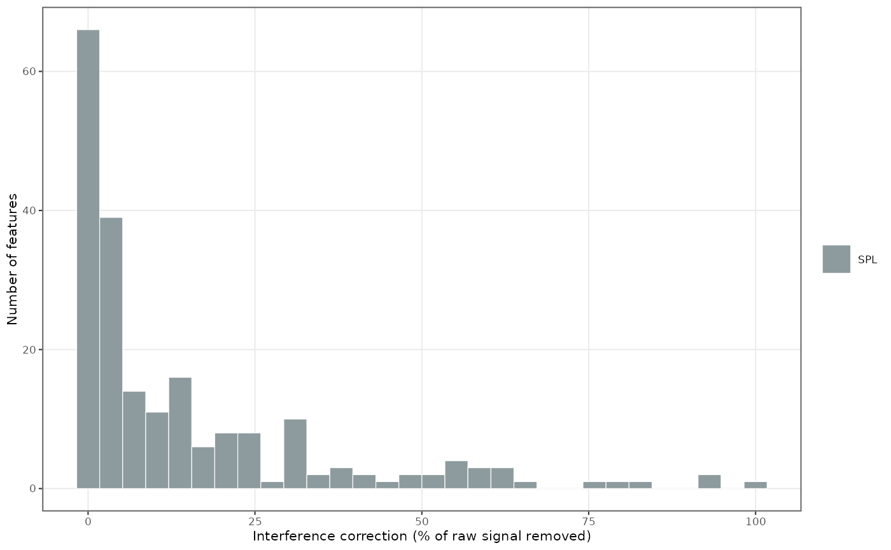
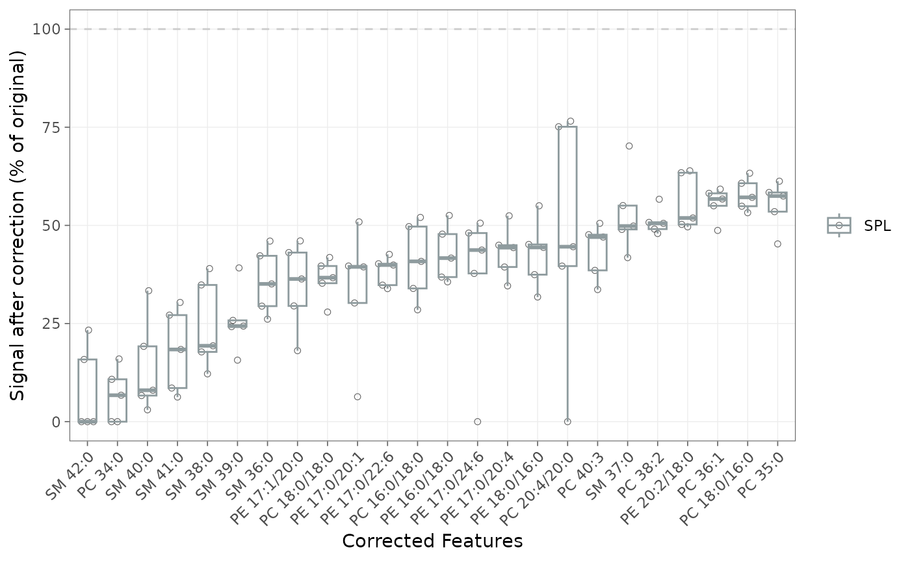

Isotopic interference correction
Source:vignettes/articles/tutorial-11-interference-correction.Rmd
tutorial-11-interference-correction.RmdTutorial Advanced Prerequisites: Basic workflow
Class-based chromatography — HILIC, normal-phase LC, or SFC — co-elutes same-class lipid species, whose isotopic envelopes overlap and bias quantification (Gao et al. 2021). In these assays the overlap is the rule and has to be corrected — a Type II isotopic correction (overlap between distinct species, as opposed to Type I correction of a compound’s own isotopologue pattern).
The correction is precursor-based for shotgun (MS1) data but must be
done at the fragment level for MRM, where LICAR (Gao et al. 2021) is the sole method. MRMhub
implements LICAR: it runs on the raw feature intensities
(feature_intensity) and applies to every sample,
unlike drift and batch correction, which are fitted on QC samples only.
The Isotopic
interference correction manual page covers the concepts.
1. Annotate the MRM pattern
Automatic derivation needs one manual annotation: an
mrm_pattern column on the Features metadata
sheet, encoding the lipid class and the product-ion origin so
calc_isotopic_interferences() can build the fragment
formula. Precursor/product m/z and the optional polarity
come from the import or the metadata; only mrm_pattern is
added by hand:
| feature_id | feature_class | precursor_mz | product_mz | polarity | mrm_pattern |
|---|---|---|---|---|---|
| PC 34:2 | PC | 758.6 | 184.1 | Pos | PC (Pos) Pro=184.1 |
| PC 34:1 | PC | 760.6 | 184.1 | Pos | PC (Pos) Pro=184.1 |
| PC 34:0 | PC | 762.6 | 184.1 | Pos | PC (Pos) Pro=184.1 |
| Cer 18:1;O2/16:0 | Cer | 538.5 | 264.3 | Pos | Cer (Pos) SphB-2H2O |
| PC 34:1 [FA 16:0] | PC | 804.6 | 255.2 | Neg | PC (Neg, FA) FA |
The valid labels are listed by licar_pattern_choices():
library(mrmhub)
licar_pattern_choices("Head Group")The save_metadata_templates() template offers
mrm_pattern as a filtered dropdown. On import, MRMhub
validates it: an unknown label is an error; a name/pattern class
mismatch, or a sum-composition name under a chain-resolved (FA/LCB)
pattern, is a warning.
mexp <- readRDS("results/mexp_processed.rds")2. Derive the interference relationships
calc_isotopic_interferences()
discovers the M+2 overlaps and stores them in
annot_interferences. Set level to the
acquisition: "MRM" for class-based LC-MRM (fragment-level)
or "MS1" for genuine full-scan data. Always use
"MRM" for MRM data — "MS1" is not a valid
fallback when a product m/z is missing.
# Class-based LC-MRM: fragment-level M+2 (needs precursor + product m/z).
mexp <- calc_isotopic_interferences(mexp, level = "MRM")
# Genuine MS1 / full-scan: whole-molecule M+2 (needs precursor m/z only).
# mexp <- calc_isotopic_interferences(mexp, level = "MS1")Factors are computed with enviPat 2.8 (Loos et al. 2015) and are deterministic. Raise
min_contribution to drop negligible pairs; see co-elution filtering to
keep only co-eluting pairs.
3. Inspect the derived relationships
The two-stage API lets you review the edges before subtracting. Each
row of annot_interferences is one overlap, with its
contribution factor K in interference_contribution
and an overlap_type (m2_front,
m2_back, or ms1_m2):
mexp@annot_interferencessummarize_interferences()
rolls this up per feature — how many are affected, split by source and
overlap type, with the contribution-factor range:
summarize_interferences(mexp)A feature carrying both a m2_front and a
m2_back row is corrected against two interferers; the
source column marks each edge as auto-derived
("auto") or declared ("manual").
4. Apply the correction
correct_isotopic_interferences()
subtracts all derived edges from the raw intensities in one pass (its
reference page gives the formula and zero-clamping).
mexp <- correct_isotopic_interferences(mexp)Apply it before ISTD normalisation, drift, and batch
correction — running it later resets those steps (with a warning).
Uncorrected values are kept in feature_intensity_orig.
Overlaps you annotate yourself (in-source fragments, co-eluting isobars)
are applied with correct_custom_interferences().
5. Correct a single pair manually
For a one-off correction, or to check a factor before trusting the
automatic derivation, use correct_interference_manual(),
where variable is the dataset column
(feature_intensity):
mexp <- correct_interference_manual(
mexp,
variable = "feature_intensity",
feature = "PC 32:0",
interfering_feature = "SM 36:1 M+3",
interference_contribution = 0.0107,
neg_to_na = FALSE,
updated_feature_id = NA)updated_feature_id renames the corrected feature so raw
and corrected channels can coexist. A manual factor can come from a
theoretical calculation (enviPat), a pure-standard
injection (which also captures Q1/Q3 transmission and in-source
effects), or a published class-level table.
6. Verify the correction
d <- get_analyticaldata(mexp, annotated = TRUE) |>
dplyr::filter(feature_id == "PC 32:0") |>
dplyr::select(
analysis_id, qc_type,
intensity_before = feature_intensity_orig,
intensity_after = feature_intensity) |>
dplyr::mutate(
pct_change =
100 * (intensity_after - intensity_before) / intensity_before)
summary(d$pct_change)In blanks (SBLK/PBLK) the residual signal
should approach zero; a non-zero blank median points to an
underestimated factor. plot_qc_interference_impact()
shows how many features were corrected at each magnitude (percent of
signal removed):
plot_qc_interference_impact(mexp, qc_types = "SPL")
Figure 1. How many features were corrected at each magnitude (percent of signal removed) in the study samples.
For a per-feature view, plot_interference_correction()
plots each feature’s residual signal as a percent of its uncorrected
value, split by QC type. min_correction_pct restricts it to
strongly affected features (here ≥ 40 % removed),
sort_by_effect ranks by magnitude, and top_n
keeps the largest:
plot_interference_correction(
mexp,
qc_types = "SPL",
min_correction_pct = 40,
sort_by_effect = "desc",
point_size = 1.5, point_alpha = 0.8)
Figure 2. Per-feature residual signal after correction, as a percent of the uncorrected value, for features with at least 40% removed, split by QC type.
Each point is one study sample; SPL points have
transparent fill, so raise point_size /
point_alpha when only a few are shown.
Co-elution filtering (experimental)
An interferer’s M+2 lands inside a victim’s integrated area only if
the two co-elute. The experimental check_coelution gate
keeps an m/z-matched edge only when the interferer’s apex falls within
the victim’s integration window, dropping chromatographically resolved
pairs:
mexp <- calc_isotopic_interferences(
mexp, level = "MRM", check_coelution = TRUE)It is off by default while the gate is validated. When enabled, the pairs it drops — and, where retention data are missing, those it cannot verify — are reported in the console.
Next steps
- Isotopic interference correction: the conceptual reference
- Drift and batch correction: apply after interference correction
- Basic MRMhub workflow: full processing pipeline
-
The
MRMhubExperiment data object: how
_origpostfixes preserve raw values